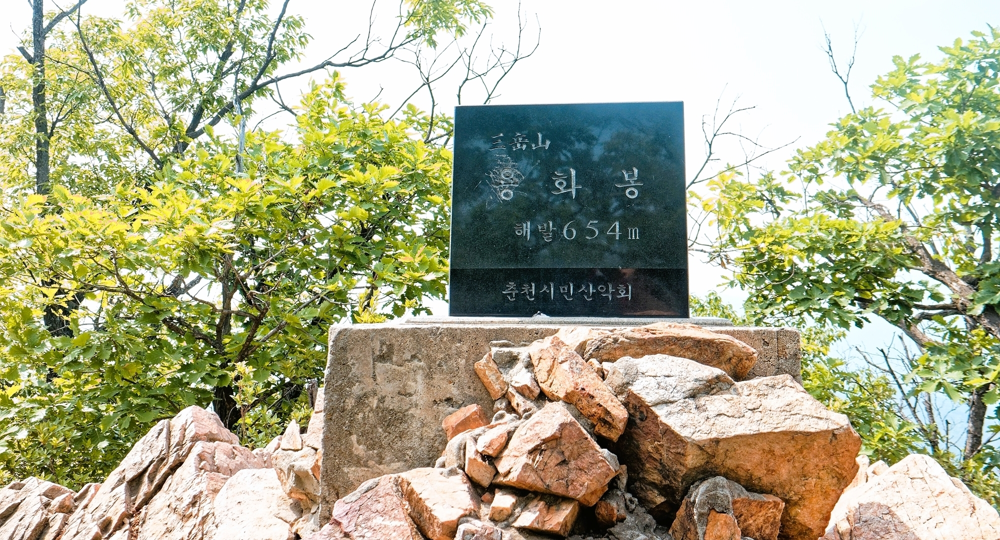
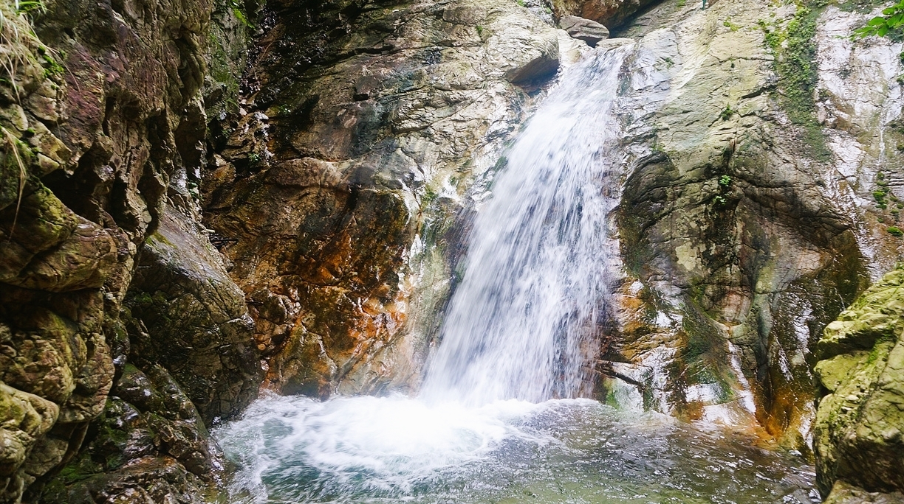
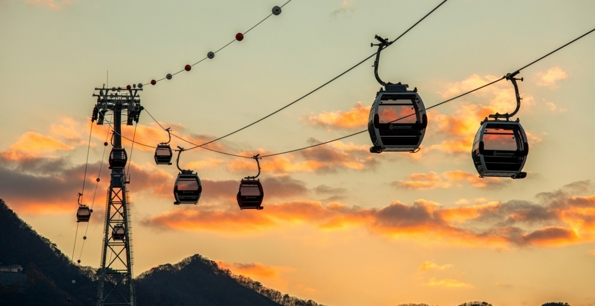
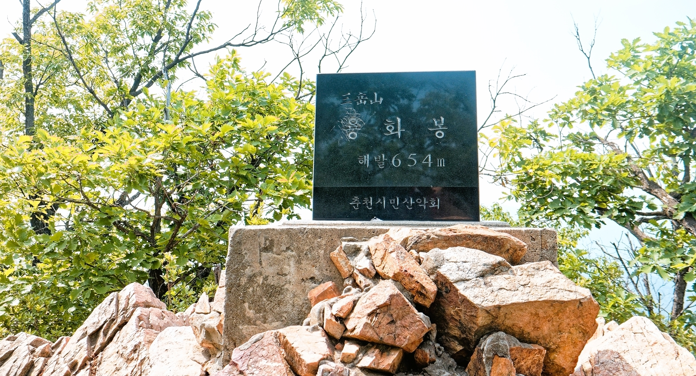
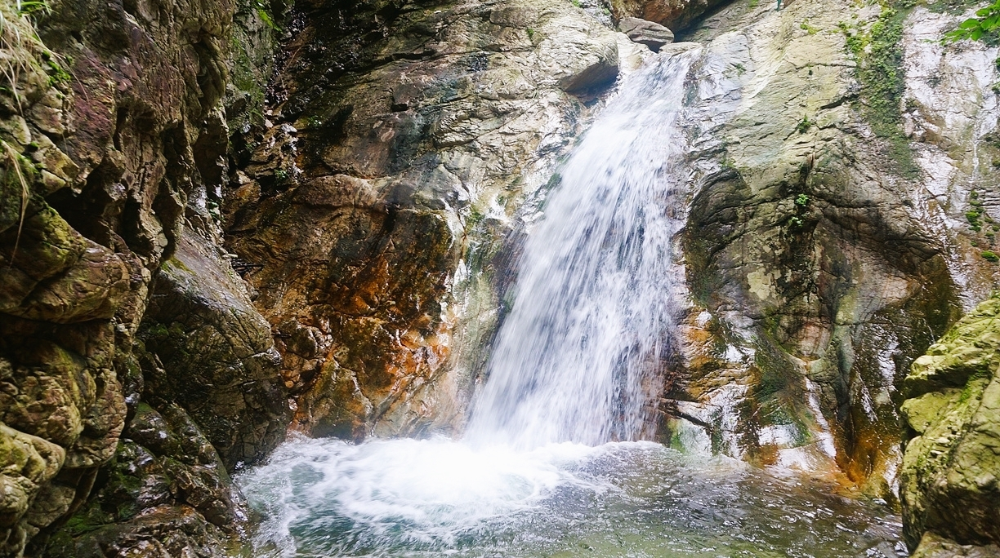
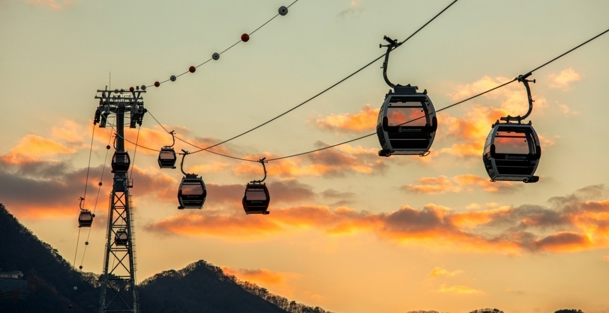

높이는 654m이고, 주봉(主峰)은 용화봉이다. 서울특별시에서 북쪽으로 80km, 춘천시에서 남서쪽으로 10km 떨어진 지점에 있다. 경춘국도의 의암댐 바로 서쪽에 있으며, 북한강으로 흘러드는 강변을 끼고 남쪽으로 검봉산·봉화산이 있다. 주봉이 용화봉과 함께 청운봉(546m)·등선봉(632m) 3개이므로 삼악산이라는 이름이 붙었으며, 3개 봉우리에서 뻗어내린 능선이 암봉을 이룬다. 명소 가운데 등선폭포(登仙瀑布, 또는 경주폭포)는 높이 15m의 제1폭포 외에 제2·3 폭포가 더 있고, 그 외에 등선·비선·승학·백련·주렴폭포 등 크고 작은 폭포가 이어진다. 정상에서는 의암호와 북한강이 내려다보인다.
삼악산을 연결한 삼악산 호수 케이블카는 삼천동에서 의암호를 가로질러 삼악산을 연결하는 3.61km의 국내 최장 케이블카이다.
 




